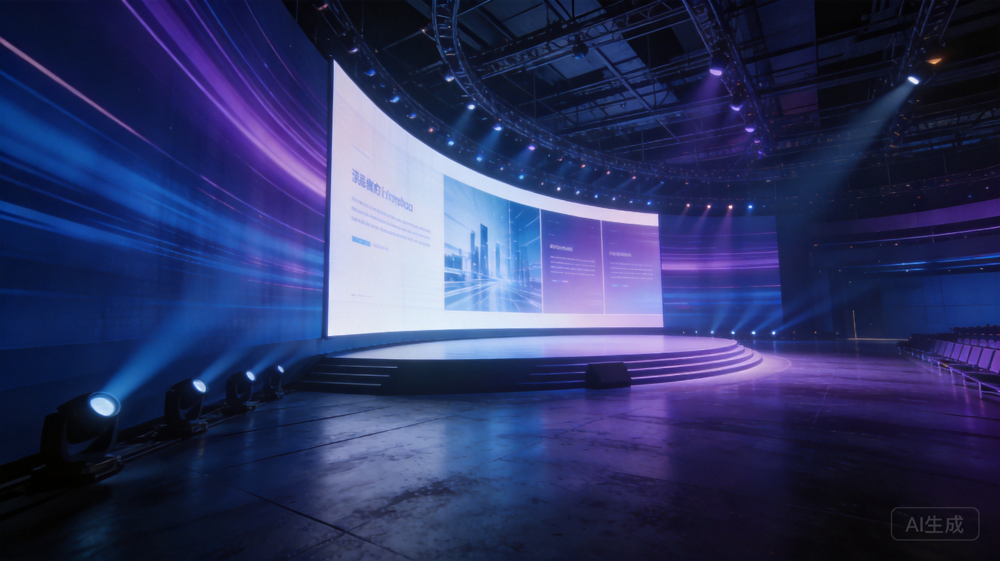
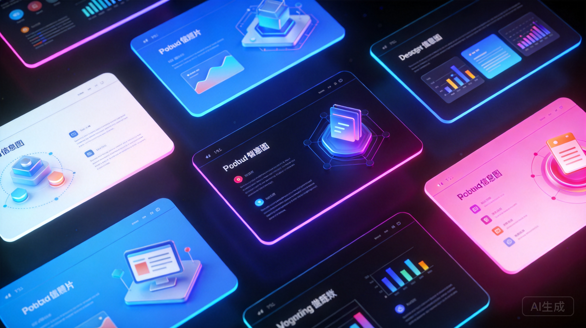

36 主题 · 31 布局 · 27 动画 · 一键切换 · 演讲者模式
Overview · 概览
从极简白到赛博霓虹，按 T 键一键循环切换，所有幻灯片同步更新。
封面、目录、数据、代码、时间轴、对比……覆盖 95% 的演示场景。
CSS 入场动画 + Canvas FX 粒子特效，按 A 键即时预览。
Quick Start · 五分钟上手
运行 new-deck.sh 生成脚手架。
按 T 循环预览 36 套主题。
~30s从 single-page/ 复制所需页型。
替换 demo 数据，保留结构。
~5min运行 render.sh 生成 PNG。
Themes & Layouts · 主题与布局
每个主题是一组 CSS 变量（tokens），覆盖颜色、字体、圆角、阴影。切换主题 = 切换整组变量，所有页面同步更新。
minimal-white · tokyo-night · cyberpunk-neon · xiaohongshu-white …
每个布局是独立的 HTML 片段，包含完整结构和演示数据。复制到 deck 中，替换内容即可。
cover · toc · kpi-grid · code · timeline …

36 主题 × 31 布局 = 无限组合
Numbers · 关键数字
Themes
一键切换
Layouts
即拷即用
Animations
CSS + Canvas
Build
纯静态零构建
Runtime · 键盘与演讲模式
所有 deck 内置 runtime.js，打开浏览器即可演示。
← → Space PgUp PgDn方向键与空格翻页，Home / End 直达首尾，O 键打开幻灯片概览网格。
T / 动画 · A / 全屏 · FT 循环切换主题，A 切换当前页动画，F 进入全屏演示模式。
SS 键弹出独立窗口：当前幻灯片预览 + 下页预览 + 逐字稿 + 计时器，支持拖拽布局。
开始你的第一个 deck
./scripts/new-deck.sh my-deck
→ 打开 projects/my-deck/index.html